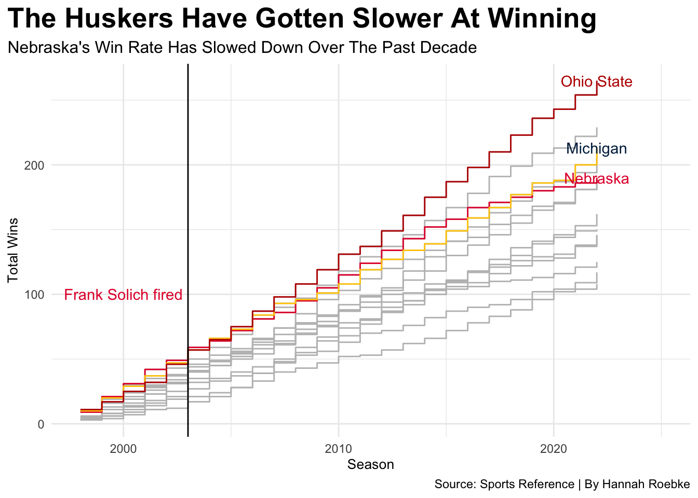

Code
library(tidyverse)
library(ggalt)
library(ggtext)
library(ggrepel)
cfb98 <- read_csv("CFBRatings1998.csv") |> mutate(Season = 1998)
cfb99 <- read_csv("CFBRatings1999.csv") |> mutate(Season = 1999)
cfb00 <- read_csv("CFBRatings2000.csv") |> mutate(Season = 2000)
cfb01 <- read_csv("CFBRatings2001.csv") |> mutate(Season = 2001)
cfb02 <- read_csv("CFBRatings2002.csv") |> mutate(Season = 2002)
cfb03 <- read_csv("CFBRatings2003.csv") |> mutate(Season = 2003)
cfb04 <- read_csv("CFBRatings2004.csv") |> mutate(Season = 2004)
cfb05 <- read_csv("CFBRatings2005.csv") |> mutate(Season = 2005)
cfb06 <- read_csv("CFBRatings2006.csv") |> mutate(Season = 2006)
cfb07 <- read_csv("CFBRatings2007.csv") |> mutate(Season = 2007)
cfb08 <- read_csv("CFBRatings2008.csv") |> mutate(Season = 2008)
cfb09 <- read_csv("CFBRatings2009.csv") |> mutate(Season = 2009)
cfb10 <- read_csv("CFBRatings2010.csv") |> mutate(Season = 2010)
cfb11 <- read_csv("CFBRatings2011.csv") |> mutate(Season = 2011)
cfb12 <- read_csv("CFBRatings2012.csv") |> mutate(Season = 2012)
cfb13 <- read_csv("CFBRatings2013.csv") |> mutate(Season = 2013)
cfb14 <- read_csv("CFBRatings2014.csv") |> mutate(Season = 2014)
cfb15 <- read_csv("CFBRatings2015.csv") |> mutate(Season = 2015)
cfb16 <- read_csv("CFBRatings2016.csv") |> mutate(Season = 2016)
cfb17 <- read_csv("CFBRatings2017.csv") |> mutate(Season = 2017)
cfb18 <- read_csv("CFBRatings2018.csv") |> mutate(Season = 2018)
cfb19 <- read_csv("CFBRatings2019.csv") |> mutate(Season = 2019)
cfb20 <- read_csv("CFBRatings2020.csv") |> mutate(Season = 2020)
cfb21 <- read_csv("CFBRatings2021.csv") |> mutate(Season = 2021)
cfb22 <- read_csv("CFBRatings2022.csv") |> mutate(Season = 2022)
fblogs <- bind_rows(cfb98, cfb99, cfb00, cfb01, cfb02, cfb03, cfb04, cfb05, cfb06, cfb07, cfb08, cfb09, cfb10, cfb11, cfb12, cfb13, cfb14, cfb15, cfb16, cfb17, cfb18, cfb19, cfb20, cfb21, cfb22)
big <- c("Nebraska", "Iowa", "Minnesota", "Wisconsin", "Illinois", "Northwestern", "Purdue", "Indiana", "Michigan", "Michigan State", "Penn State", "Ohio State", "Rutgers", "Maryland")
bigten <- fblogs |>
filter(
School %in% big
) |>
group_by(School) |>
arrange(Season) |>
mutate(
totalwins=cumsum(W)
) |>
mutate(
teamseason=paste(School, Season)
)
os <- bigten |> filter(School == "Ohio State")
wi <- bigten |> filter(School == "Wisconsin")
pu <- bigten |> filter(School == "Purdue")
ps <- bigten |> filter(School == "Penn State")
mi <- bigten |> filter(School == "Michigan")
ms <- bigten |> filter(School == "Michigan State")
id <- bigten |> filter(School == "Indiana")
ia <- bigten |> filter(School == "Iowa")
nw <- bigten |> filter(School == "Northwestern")
il <- bigten |> filter(School == "Illinois")
wi <- bigten |> filter(School == "Wisconsin")
rt <- bigten |> filter(School == "Rutgers")
my <- bigten |> filter(School == "Maryland")
nu <- bigten |> filter(School == "Nebraska")
ggplot() +
geom_step(data=bigten, aes(x=Season, y=totalwins, group=School), color="grey") +
geom_step(data=nu, aes(x=Season, y=totalwins), color="#E41C38") +
geom_step(data=mi, aes(x=Season, y=totalwins), color="#FFCB05") +
geom_step(data=os, aes(x=Season, y=totalwins), color="#BB0000") +
geom_text(data=nu |> filter(Season == max(Season)), aes(x=Season, y=totalwins, label=School), color="#E41C38") +
geom_text(data=mi |> filter(Season == max(Season)), aes(x=Season, y=totalwins, label=School), color="#00274C") +
geom_text(data=os |> filter(Season == max(Season)), aes(x=Season, y=totalwins, label=School), color="#BB0000") +
geom_text(aes(x=2000, y=100), label="Frank Solich fired", color="#E41C38") +
labs(x="Season", y="Total Wins", title="The Huskers Have Gotten Slower At Winning", subtitle="Nebraska's Win Rate Has Slowed Down Over The Past Decade", caption="Source: Sports Reference | By Hannah Roebke") +
scale_x_continuous(limits=c(1998, 2025)) +
theme_minimal() +
theme(
plot.title = element_text(size = 20, face = "bold"),
plot.subtitle = element_text(size=12),
axis.title = element_text(size = 10),
plot.title.position = "plot"
) +
geom_vline(xintercept=2003, color="black")